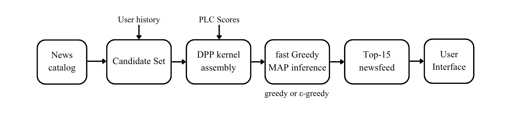

News recommenders optimise clicks, but in doing so, they narrow the ideological range of what you read. My thesis asks: can we fix that without sacrificing recommendation quality?
"How can DPPs balance the trade-off between user preferences and information bubbles in newsfeeds?"
Recommenders learn from implicit click data — they surface more of what they determine you believe, not necessarily what you'd want to see. In political news, that's high-stakes: it shapes how you perceive public debate, often without you noticing. Most modern recommenders are neural and largely opaque about why they made a given call.
A DistilBERT model fine-tuned to assign a continuous ideology score (0 = left, 1 = right) to any article, based on its text alone — not its publisher or source.
A kernel design that blends semantic similarity with political divergence through a tunable weight β.
Plus an ε-greedy exploration variant built specifically to counteract candidate-set bias in two-stage recommendation pipelines.
5 models benchmarked across 12,902 users and 6 metrics — 3 accuracy measures (Precision@15, Recall@15, NDCG@15) and 3 diversity measures (Intra-List Diversity, Political Variance, Political Balance).

The main pipeline — from personalized candidate set, through a DPP layer, to a top-15 feed in UI.
Benchmarked against a relevance-only baseline (NAML-lite), the standalone DPP model produced clearly more diverse newsfeeds without giving up meaningful accuracy.
In practice, DPPs are usually deployed as a reranking step over a candidate shortlist that's already been filtered by an accuracy-focused model. It computes faster, as MAP inference runs over a smaller list. I tested this hybrid setup in models (4) and (5) and it measurably constrained diversity with a minimal increase to accuracy. Once the relevance model pre-filters to its top 100 "most relevant" articles, that shortlist is already more ideologically narrow than the full candidate pool, leaving the DPP less room to diversify.
Adding a small amount of randomness converged the diversity metrics back to the level of standalone DPP. The ε-greedy variant occasionally samples from the global candidate pool, which restores the exploration freedom of a DPP. The trade-off: it gave up the accuracy gains the pre-filtering stage had bought. Whole system can be tuned by changing β and ε.
The accuracy metrics (precision, recall, NDCG) are uniformly low in absolute terms across all five models, which reflects the evaluation setup itself: selecting 15 articles from a pool of roughly 1,460 unread candidates against a sparse held-out test set is a genuinely hard retrieval problem. A live, online evaluation would give a more believable absolute accuracy number and show if application of DPP-based models makes the user's newsfeed accurate.